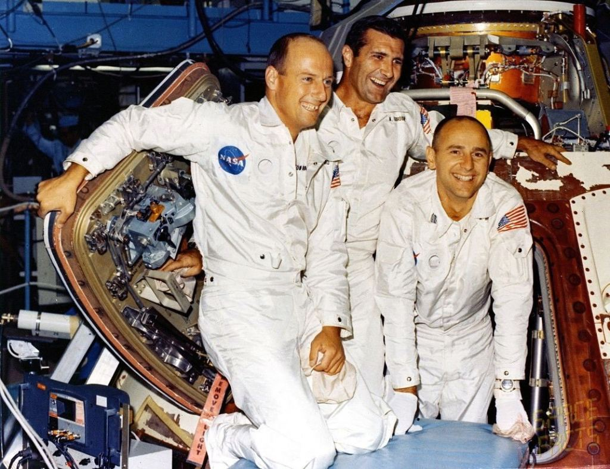

Pete Conrad was known for his humor, confidence, and exceptional piloting skills. Before Apollo 12, he flew on Gemini 5 and Gemini 11, gaining extensive experience in long-duration missions and orbital operations.
As commander of Apollo 12, Conrad led NASA's second Moon landing and became the third person to walk on the lunar surface. He helped demonstrate that astronauts could land with remarkable precision and conduct increasingly advanced scientific work on the Moon.
Conrad remains remembered as one of NASA's most talented pilots and one of the most beloved personalities of the Apollo era.
Richard Gordon served as the Command Module Pilot for Apollo 12. While Conrad and Bean explored the Moon, Gordon remained in lunar orbit, conducting observations and preparing for the crew's return.
Prior to Apollo 12, Gordon flew on Gemini 11, where he completed spacewalk activities and participated in advanced orbital maneuvers. His work during Apollo 12 was essential to the mission's success, ensuring that the spacecraft remained operational throughout lunar surface operations.
Alan Bean became the fourth person to walk on the Moon during Apollo 12. A former naval aviator, he was known for his calm demeanor and technical expertise.
During the mission, Bean helped collect scientific samples, deploy experiments, and explore the landing site near Surveyor 3. After retiring from NASA, he became a full-time artist and created paintings inspired by his experiences on the Moon. His artwork offered a unique perspective on lunar exploration and remains highly regarded today.